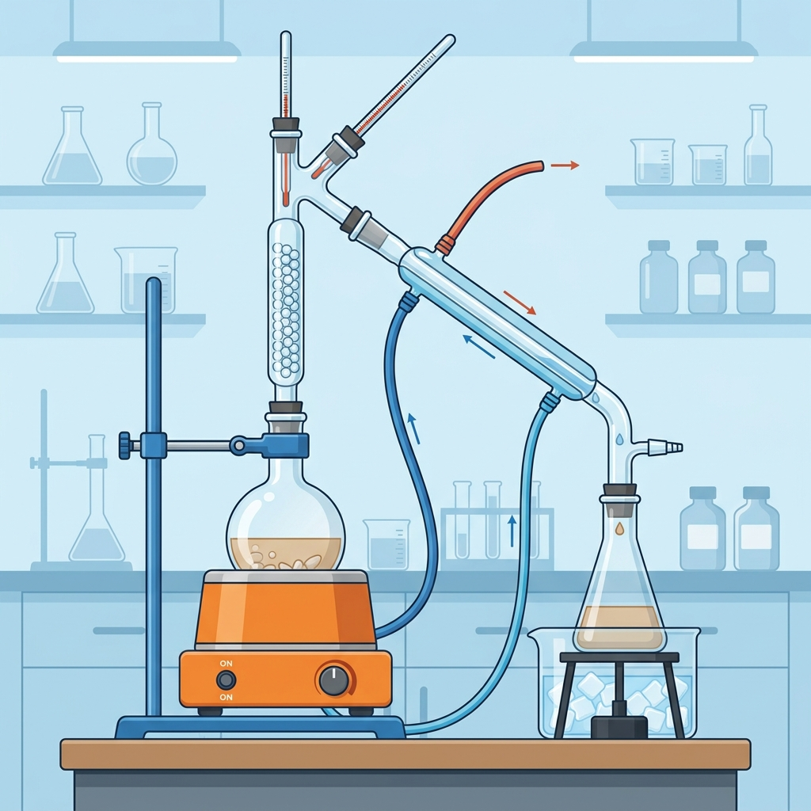

Vardaan Learning Institute
Class 9 Science • Chapter Notes
EXPLORING MIXTURES AND THEIR SEPARATION

Illustration representing a distillation setup for separating miscible liquids
1. Classifying Mixtures
- Homogeneous Mixture (Solution): Has a uniform composition throughout. For example, sugar dissolved in water, vinegar, or aerated drinks.
- Heterogeneous Mixture: Does not have a uniform composition. The different components can often be seen. For example, sand and water, oil and water.
2. Solutions
A solution is a homogeneous mixture where a solute (the substance that gets dissolved) is mixed with a solvent (the substance that does the dissolving).
2.1 Concentration of a Solution
The amount of solute dissolved in a given amount of solvent or solution is called the concentration.
Formulae
A. Mass by mass percentage (% m/m): Used for solid solutes in solid/liquid solvents.
$$ \text{Mass by mass percentage} = \frac{\text{Mass of solute}}{\text{Mass of solution}} \times 100 $$
B. Mass by volume percentage (% m/v): Common in medicines and laboratories.
$$ \text{Mass by volume percentage} = \frac{\text{Mass of solute}}{\text{Volume of solution}} \times 100 $$
C. Volume by volume percentage (% v/v): Used when two miscible liquids are mixed.
$$ \text{Volume by volume percentage} = \frac{\text{Volume of solute}}{\text{Volume of solution}} \times 100 $$
2.2 Solubility of Substances
- The maximum amount of solute that dissolves in a fixed quantity of solvent at a specific temperature is its solubility.
- A solution that cannot dissolve any more solute at that temperature is a saturated solution.
- The solubility of solid solutes generally increases with temperature, while for gases it generally decreases.
3. Separation of Homogeneous Mixtures
3.1 Crystallization
- The process of forming crystals from a hot, saturated solution by cooling it.
- It separates pure solid crystals from undesirable impurities (e.g., getting pure copper sulfate from an impure sample).
- Solid-solid homogeneous mixtures like alloys (e.g., brass, bronze, stainless steel) cannot be separated by physical methods.
3.2 Distillation
- Used to separate a homogeneous mixture of two miscible liquids that boil without decomposition and have sufficient difference in their boiling points (at least 25°C).
- The mixture is heated, the liquid with the lower boiling point vaporises first, and is then cooled in a condenser to be collected as a pure liquid.
- Fractional Distillation: Used when the difference in boiling points is less than 25°C (e.g., separating components of crude petroleum or air).
4. Separation of Heterogeneous Mixtures
4.1 Separation of Immiscible Liquids
- Two liquids that do not mix (like oil and water) form separate layers based on their densities.
- They can be separated using a separating funnel. The denser liquid forms the bottom layer and can be drawn off.
4.2 Sublimation
- The transition of a solid directly into a vapour without passing through the liquid state.
- Used to separate a sublimable volatile component (like camphor, naphthalene, dry ice) from a non-sublimable impurity (like sand).
4.3 Suspensions
- A heterogeneous mixture where solid particles do not dissolve but remain suspended.
- Particles are visible to the naked eye (size > 1000 nm). They settle down when left undisturbed.
- Centrifugation: Rapid spinning of a mixture. The outward centrifugal force pushes heavier particles to the bottom. Used in blood tests to separate plasma and cells.
- Coagulation: Adding a chemical (like alum) to cause fine suspended particles to clump together and settle out (sedimentation).
4.4 Colloids and the Tyndall Effect
- A colloid is heterogeneous but appears homogeneous because particles are uniformly dispersed.
- Particle size is between 1 nm and 1000 nm. They do not settle down and cannot be filtered.
- Tyndall Effect: The scattering of a beam of light by colloidal particles, making the path of light visible. E.g., sunlight entering a dusty room or through a dense forest.
- Components are called the dispersed phase (solute-like) and dispersion medium (solvent-like).
- Emulsions: Colloids where both phases are liquids (e.g., milk, butter).